Lead an AI-Driven
Workforce Transformation
AIを単発のアプリケーションから再利用可能なプラットフォームへ進化させ、経営層に目に見える経済効果を示す。本ページはLITEONの会長およびCIOに向けて、「まずデータをつなぎ、それからAI」という原則でSAP・PLM・MESを補完するAIプラットフォームをどう構築し、経営指標で成果を出すかを説明するものです。
LITEONの現状：AI関連売上が倍増し、社内オペレーションも追いつく必要がある
LITEON at an inflection point
| 項目 | 公開情報の要点 | AIプラットフォームへの示唆 |
|---|---|---|
| 規模 | 子会社86社、工場112か所、世界20以上の拠点 | 一度構築して複数工場へ展開。まずデータ定義を統一 |
| 生産能力 | ベトナム新工場が2026.11に開業、高雄第2期が2026.12、米国テキサスが2027年第2四半期に稼働 | 新工場はAIの最適なパイロット：過去のしがらみがない |
| 製品 | 8.5kW PSU・BBUを量産、110kW Power Shelf、800VDC Power Rack、120kW CDU | 製品の複雑化に伴い、研究開発と品質のナレッジにAIの支援が必要 |
| ERP | SAP ECC → S/4HANA、2027.01.04に全世界同時稼働。新機能16項目、プロセス改善27項目 | AIはClean Coreの外側で拡張し、再カスタマイズを避ける必要がある |
| 製造 | MESとERPが密接に連携：代替部品、キット充足、作業指示のスケジューリング | 次のステップは「予測し、提案し、自ら判断する」こと――まさにエージェントの出番 |
| 財務 | 連結決算の自動化により、データ連携の効率が90%以上向上 | データ自動化の基盤がすでにあり、分析と予測へ拡張できる |
| セキュリティ | ISO 27001に基づくIT／OTセキュリティガバナンスの枠組み | AIガバナンスはそのままISO 42001に接続できる |
出典：経済メディアの特集記事、LITEON 2026年第3四半期の決算説明会の公開情報。数値は公開情報観測所（MOPS）を正とします。
求人票の六つの職務内容 × 私のアプローチと実績
Six responsibilities, one operating model
経営幹部とAIを優先導入する領域を定め、AIプラットフォームのブループリントを策定
- 私のアプローチ
- 「経済効果×実現可能性×再利用性」の三軸で評価し、事業グループ長と共に投資ポートフォリオを決定。1枚の意思決定シートで経営層に上申します。
- これまでの実績
- グループの年次IT戦略・投資計画を策定してCEOと経営会議に提出し、戦略の柱とRun／Grow／Transformの予算フレームワークで実行に移しました。
- 着任後の指標
- 90日以内にAI価値マップと上位5ユースケースの財務仮説を提出
散在するアプリケーションを再利用可能なデータプロダクトとプラットフォームにする
- 私のアプローチ
- モデルゲートウェイ、ナレッジベース、データプロダクト、エージェント・オーケストレーション、監視などの共通コンポーネントを切り出し、ゴールデンパスで新しいユースケースをテンプレートから立ち上げます。
- これまでの実績
- 隆中網絡（GameSparcs、6542）で、プロジェクトごとの個別環境をプラットフォームの標準コンポーネントに置き換え、コアサービスのゼロダウンタイムとTCO−30%を実現。マルチモデル・ゲートウェイとエンタープライズ・タスクハブの参照アーキテクチャを設計。
- 着任後の指標
- 新ユースケースの稼働までを「月」から「週」に短縮
SAP・PLM・MESを補完するAIスタックを構築
- 私のアプローチ
- SAPのコアには手を入れず、MES／PLMを作り直さない。API、CDC、イベントストリームでデータを読み取り、AIは「提案」として書き戻し、人の承認後に実行します。
- これまでの実績
- 泓晏科技でSAP S/4HANAをMES・PLM・APSと連携し、Edge AIoTとAI不良予測を導入：歩留まり+15%、OEE+18%。PLM→SAP→MESの単一データフローを実現する統合ブループリントを設計。
- 着任後の指標
- S/4HANA稼働後6か月以内に最初のサプライチェーンAIユースケースを本番稼働
AI組織と人材パイプラインを構築し、AIテクニカルリードとエンジニアを率いる
- 私のアプローチ
- 「中央プラットフォーム＋事業グループ組み込み」のデュアルトラック組織。テクニカルリードの能力モデル、九つの技術キャリアトラックと後継者計画。
- これまでの実績
- 盛欣／盛碁網絡のITチームは50名超。企画、フロントエンド、バックエンド・DBAの3チーム計30名超を率いてゼロからの組織再編を行い、職務記述書と能力評価を整備しました。
- 着任後の指標
- すべてのテクニカルリードに後任候補を最低1名
事業部門主導のプラットフォームチームと社内POの育成を推進し、AIネイティブな働き方を広げる
- 私のアプローチ
- POアカデミー：事業部門の管理職がユースケースの財務仮説と受入基準を書けるようにする。Championsネットワーク。「管理職が先に学び、ITが先に試し、成果が出たら展開する」。
- これまでの実績
- 盛欣／盛碁網絡で管理職向けAIワークフロー研修を実施し、ISO 42001に基づく利用規程を策定。Agentic AIワークフローにより業務自動化効率を55%向上。
- 着任後の指標
- 初年度に認定PO30名
経営幹部と事業部門長に定期的に成果を報告
- 私のアプローチ
- 月次のAI価値ダッシュボード、四半期のAI投資委員会、半期ごとの会長報告。EBITDA・ROI・TCOの言葉で報告します。
- これまでの実績
- 取締役会とGlobal CIOへの直属報告は10年以上。バランス・スコアカードと1枚の意思決定シートで四半期ごとにマイルストーンを報告。
- 着任後の指標
- 四半期ごとに効果を公開でレビューし、金額はCFOが確認
必須要件と歓迎要件
| 要件 | 私の根拠 | 結果 |
|---|---|---|
| 学歴・業界経験は不問 | 情報技術管理学博士。電子製造、外資系ソフトウェア、上場プラットフォームの3業界 | 該当 |
| AI／データチームを率いた経験10年以上 | 2010年からCIOとしてデータ・システムチームを統括、2018年からAIoT・AI歩留まりチーム、2025年からAgentic AIチームを率い、通算15年以上 | 該当 |
| AIプラットフォームまたはプロダクトの本番稼働を主導し、定量的な成果を出した | AI不良予測：歩留まり+15%、OEE+18%。Agentic AI：自動化効率+55% | 該当 |
| 歓迎要件｜AI／データ基盤とチームをゼロから構築 | 泓晏科技のEdge AIoTデータハブ、盛欣／盛碁網絡のAIガバナンスとエージェント基盤、いずれもゼロから構築 | 該当 |
| 歓迎要件｜Cレベル・経営幹部とのコミュニケーション | 取締役会とGlobal CIOに直属し、EBITDA・TCO・ROICで報告 | 該当 |
| 歓迎要件｜CIOまたはIT部門長の経験 | CIO／CISO／CDAIO／技術部門長として15年以上 | 該当 |
| 歓迎要件｜国内大手企業のDX推進 | 複数工場のS/4HANA統合、グローバルなコアサービスの無停止移行、グループ中央の情報アーキテクチャ | 該当 |
技術コンピテンシーとマネジメント・コンピテンシーの照合
Technical & managerial competency
LITEON AIプラットフォームのブループリント：SAP・PLM・MESを補完
Don't touch the core — augment it
設計原則：SAPのコアには手を入れず、MES／PLMを作り直さない。AIプラットフォームは三つの基幹システムの横に位置し、データを読み取り、提案を行い、権限の範囲内で実行します。各レイヤーをクリックすると説明が表示されます。
三つの基幹システムとの役割分担
| システム | 基幹システムの役割：記録と取引 | AIプラットフォームの役割：予測と提案 |
|---|---|---|
| SAP S/4HANA | 受注、購買、在庫、財務転記 | 需要予測、欠品アラート、異常取引の検知、月次決算の分析 |
| PLM | BOM、ECN、図面バージョン | 設計ナレッジ検索、代替部品の推奨、ECN影響分析 |
| MES | 作業指示の実行、工程記録、トレーサビリティ | スケジューリング最適化の提案、歩留まり予測、設備の予防保全 |
プラットフォームはSAPネイティブ、パブリッククラウド、オープンソースのオンプレミスの三ルートをTCOとデータ主権で比較してから上申し、特定ベンダーを前提としません。
LITEONの企業・ITアーキテクチャに組み込むAIプラットフォーム
Enterprise architecture first, then AI
データ接続が先、AIはその後。AIプラットフォームは新たな別システムではなく、S/4HANA、PLM、MES、QMSの横に立つ共通機能です。ハイブ計画のAPI基盤とレイクハウスの上に構築し、一度作って全112工場へテンプレートで展開します。
LITEONの企業・ITアーキテクチャ全体像：AI基盤とデータ基盤の位置
太枠の2層が新設部分です。データ基盤はハイブ計画で構築し、AI基盤はその上で共通機能を提供します。その他の層はLITEONの現行アーキテクチャを活かし、SAPのコアには手を加えません。
LITEONのAI課題は、データ・規制・規模から始まる
| 観点 | LITEONの現状（公開情報と棚卸しの前提） | AIアーキテクチャへの意味 |
|---|---|---|
| 製造ライン | SMT、挿入、組立、バーンイン・機能試験。電源、オプトエレクトロニクス、クラウド・IoTの製品ラインが並行 | 設備パラメータ、AOI、試験データが予測モデルの主原料。設備はインターネットに直接つながず、データは産業用DMZ経由でのみ送信 |
| システム | SAP ECCからS/4HANAへ、2027.01.04に全世界同時稼働。MESはERPと密接に連携（代替部品、キット充足、スケジューリング） | AIは基幹システムの横でデータを読み、S/4HANAのコアは改修しない。切替期間中はコアに触れない |
| 規制と顧客 | ISO 27001でIT/OTセキュリティを統治。車載製品はIATF 16949。クラウド顧客やブランド顧客の定期監査 | AIの出力は「提案」のみ。電子記録には監査証跡、電子署名、ALCOA+が必要 |
| 規模 | 子会社86社、工場112か所、世界20以上の拠点。ベトナム新工場、高雄第2期、米テキサス工場が順次稼働 | 基盤は一度作りテンプレートで展開。新工場はレガシーがなく最適な試行先。データの保管地はD06で決定 |
| オペレーション | 製品の複雑化（8.5kW PSU、BBU、パワーラック、CDU）。代替部品とキット充足の管理が日常の重点 | 欠品・代替部品アラート、仕様・見積のナレッジ検索が最も早く財務効果を示す |
| 成長 | AI関連売上比率は30%超、2027年は40〜50%の見込み | 研究開発と品質の知見にAIの支援が必要で、新製品投入の速度に基盤が追随する必要がある |
LITEON AIプラットフォーム：6層＋ガバナンス軸
各層を選ぶと、構成要素、技術の選択肢、LITEONでの重点が表示されます。
3つのコアコンポーネント
HowardAGent エージェントハブ
- エージェント型RAG、回答には文書の版本と出典を必ず付記
- OCRエージェント：請求書、出荷伝票、検査報告を構造化
- MCP Hub：S/4HANA／MES／QMSを管理されたツール化、Text2SQLは読み取り専用
- 品質Copilot、見積アシスタント、NCR／8D下書き
HowardRoute マルチモデルゲートウェイ
- OpenAI互換の単一エンドポイントでクラウドとオンプレミスの複数モデルに接続
- Smart Routing：簡単なタスクは小型、複雑なタスクは大型モデル。トークン費用を20〜40%削減
- 429エラーや断線時にミリ秒単位で自動切替
- 認証、マスキング、ログを一元化し、費用を事業グループに配賦
HowardPro 製造予測コア
- AutoML：工程パラメータの提案、設備寿命の予測
- バーチャル計測とSPC／AOI異常の早期警告
- Domain Twinのデジタル社員：熟練エンジニアの経験を継承
- AILM：モデルの版本、ドリフト、根本原因分析
プラットフォーム設計図：全体構成＋UML 2.xの全14種類
LITEONの品質保証シナリオ（NCR／8D、SPC警告、電子承認、IEC 62443ゾーニング）で3つのコアを示します。図をクリックすると拡大表示します。
全体構成
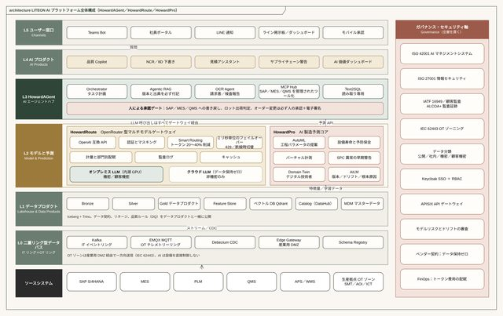
構造図 Structure（7種）
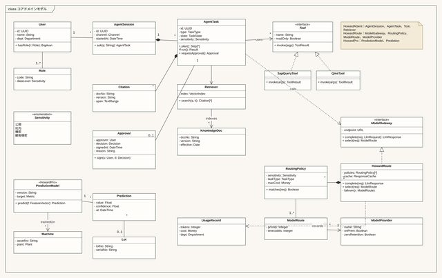
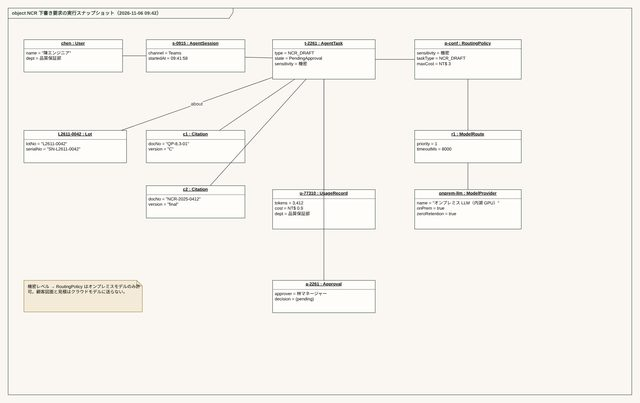
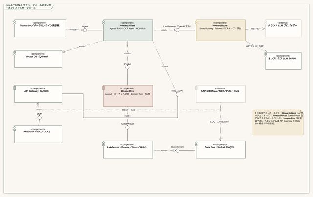
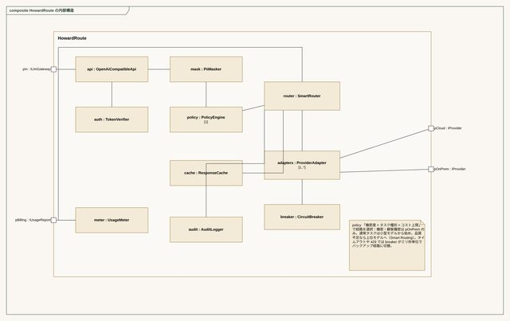
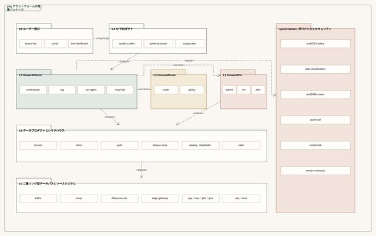
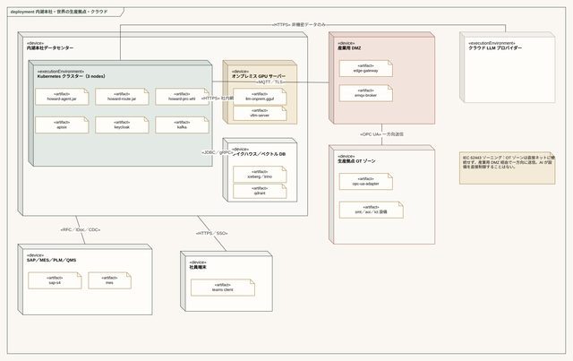
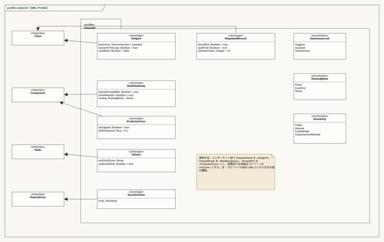
振る舞い図 Behavior（3種）
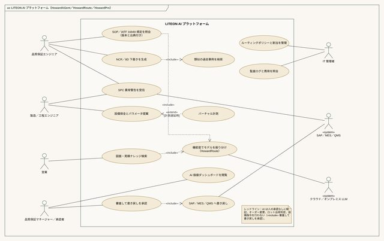
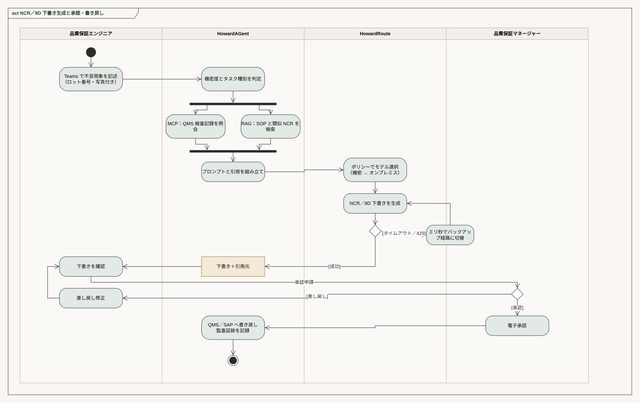
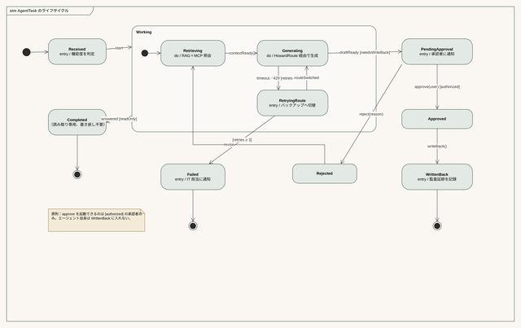
相互作用図 Interaction（4種）
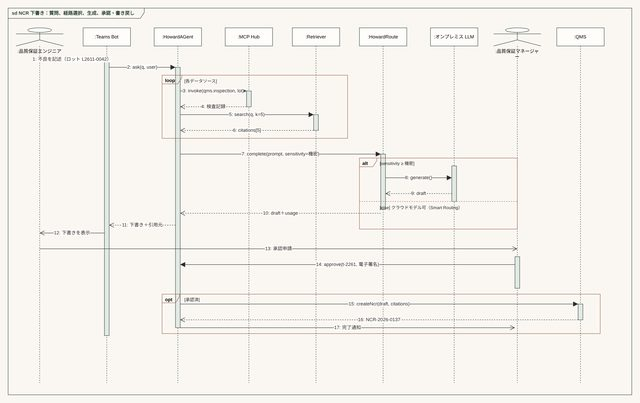
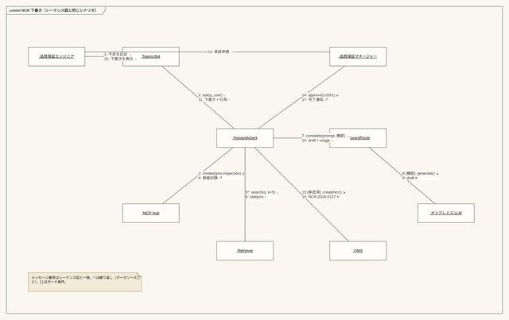
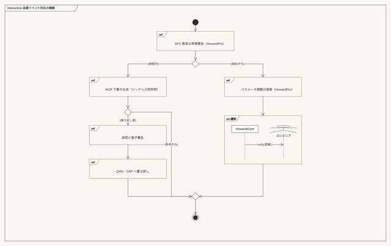
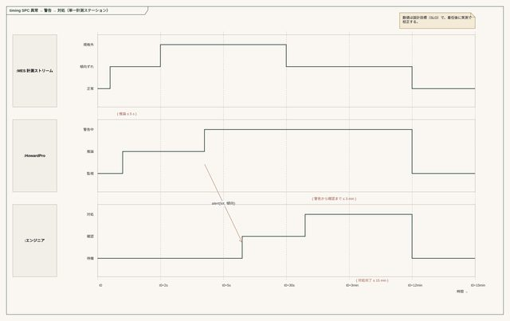
LITEONのバリューチェーンに沿ったAIシナリオ
「経済効果 × 実現可能性 × 再利用性」の3軸で評価。Aは優先投資、Bは第2弾、Cは数週間で成果が見えるクイックウィン。
SPC／AOI異常の早期警告
MES、AOI、試験工程のデータを購読し、傾向のずれを検知して規格外になる前にエンジニアに知らせる。
予防保全
実装機、リフロー炉、試験機の稼働データから保全時期を予測し、計画外停止を減らす。
欠品・代替部品・滞留在庫アラート
S/4HANAの受注と在庫、APS、PLMの変更を組み合わせ、欠品、代替部品の機会、滞留在庫を早期に把握する。
NCR／8D下書きエージェント
検査記録、類似の過去事例、SOPをまとめ、品質保証の承認用にNCRと8Dの下書きを作成する。
仕様・見積ナレッジ検索
類似仕様、過去見積、工数を検索して見積準備を短縮。顧客設計図はオンプレミスモデルのみ。
ECN影響分析
PLMの設計変更ごとに、影響を受けるBOM、作業指示、在庫、検査計画を自動で一覧化する。
顧客監査の準備アシスタント
IATF 16949と顧客監査の条項に対応するSOP、記録、追跡データを見つけ、監査チェックリストにまとめる。
バーチャル計測と試験時間予測
工程パラメータから重要特性とバーンイン結果を推定し、待ち時間を減らす。正式な出荷判定は実測による。
SOP・規程ナレッジベース
エージェント型RAGが社員のSOPや帳票の質問に答え、文書の版本と出典を付記する。
帳票OCRによる自動仕訳
請求書や帳票を読み取って仕訳の下書きを作り、経理が確認して転記する。
S/4HANA新プロセスQ&A
16の新機能と27のプロセス改善の教材とSOPをナレッジベース化し、切替後の利用者を支援する。
AIコードレビュー
社内開発とSIの納品コードをAIレビューとDevSecOpsの品質ゲートに通す。
AIガバナンス：ISO 27001を基盤に、ISO 42001と顧客監査へ拡張
| 観点 | 仕組み | 根拠 |
|---|---|---|
| データ分類 | 公開／社内／機密／顧客機密の4段階。顧客設計図、見積、配合は未承認の外部モデルに送らない | ISO 27001、各国の個人情報保護法 |
| モデルリスク | 稼働前に正答率とハルシネーション率を評価。回答に出典を必須化。高リスクのユースケースは人がレビュー | ISO 42001、NIST AI RMF |
| 電子記録 | AIの提案と人の承認をすべて監査証跡に残す。Bronze層は追記のみ | IATF 16949、顧客監査、ALCOA+ |
| OTセキュリティ | AIは設備を直接制御しない。パラメータ提案はMESとエンジニアの承認後に実行 | IEC 62443 |
| 権限監査 | モデルゲートウェイで認証、マスキング、完全なログを一元化。トークンは事業グループに配賦 | ゼロトラスト |
| ベンダー | データを学習に使わないこと、保管場所、削除期限を契約で明記 | ISO 27036 |
AIの優先導入領域とユースケース・ポートフォリオ
Value × feasibility × reusability
効果シナリオの試算（参考）
以下は意思決定のロジックを説明するための試算モデルであり、数値はLITEONの実データではありません。着任後にCFOが確認したベースラインに置き換えます。
AI組織、人材パイプライン、POアカデミー
Central platform + embedded business teams
| チーム | 職責 | 主な役割 | 初年度の人数（概算） |
|---|---|---|---|
| AIプラットフォーム・エンジニアリング | モデルゲートウェイ、エージェント・オーケストレーション、MLOps／LLMOps、監視 | プラットフォームのテクニカルリード、プラットフォームエンジニア、SRE | 6–8 |
| データプロダクト | レイクハウス、マスターデータ、フィーチャーストア、データ契約 | データテクニカルリード、データエンジニア、データアーキテクト | 5–7 |
| AIアプリケーションとサイエンス | モデル開発、評価、RAGのチューニング | MLテクニカルリード、データサイエンティスト、AIエンジニア | 5–7 |
| AIガバナンスとセキュリティ | ISO 42001、モデルリスク、データ分類 | ガバナンス・マネージャー（情報セキュリティ部門と連携） | 1–2 |
| 事業グループ組み込みチーム | ユースケースの実装、業務プロセスの再設計 | 事業部門のPO、ビジネスアナリスト、Champions | 事業部門が配置 |
L1 リテラシーと個人での活用
AI利用規程、データ分類、検証の習慣。管理職向けAIワークフロー研修。
成果：全員が使えて、やってはいけないことを理解している
L2 部門プロセスとエージェント
各部門が1〜2のプロセスを選び、事業部門がPO、ITがプラットフォームを提供。
成果：測定可能な部門ユースケース
L3 部門横断の業務改革と全社展開
部門横断のエージェント連携、共有ナレッジベース、Championsネットワーク。
成果：組織レベルの効果
AIガバナンス、セキュリティ、リスク
Build on ISO 27001, extend to ISO 42001
| 項目 | 仕組み | 基準 |
|---|---|---|
| データ分類 | 公開／社内／機密／顧客機密の4段階。クラウドやモデルに渡せる範囲を決定 | ISO 27001、個人情報保護法 |
| モデルリスク | 本番前に正確性、ハルシネーション率、バイアスを評価。高リスクのユースケースは人のレビューが必須 | ISO 42001、NIST AI RMF |
| 権限と監査 | モデルゲートウェイで認証、マスキング、完全なログを一元化 | ゼロトラスト |
| OTセキュリティ | AIは設備を直接制御しない。提案はMESと人の承認を経て実行 | IEC 62443 |
| サプライヤー | データを学習に使用しないこと、データの保管場所を契約で明記 | ISO 27036 |
| 主要リスク | 対策 |
|---|---|
| S/4HANA稼働とのリソースの取り合い | 2027年第1四半期まではSAPに触れないユースケース（品質、研究開発ナレッジ）のみ |
| データ品質の不足 | まずデータプロダクトと定義の統一、それからモデル |
| PoCがPoCのまま終わる | 開始前に本番稼働の条件、PO、損益科目を定義 |
| シャドーAI | 禁止するだけでなく、使いやすい公式プラットフォームと利用規程を提供 |
| 計算資源コストの膨張 | トークン／GPUコストを事業部門別に配賦し、クォータと月次報告で管理 |
着任後180日の計画と初年度の指標
Listen, decide, deliver — aligned with the S/4HANA cut-over
傾聴
- CIO、事業グループ長、CFOへのヒアリング
- 既存のAIアプリケーション、データ、チームの棚卸し
- S/4HANAのスケジュールと連携ポイントを確認
成果物：AI資産マップと現状診断
方向づけ
- ユースケースの評価と投資ポートフォリオ
- プラットフォームの三ルート選定（SAPネイティブ／パブリッククラウド／オープンソースのオンプレミス）
- 組織設計と採用計画
成果物：AIプラットフォームのブループリント、上位5ユースケースの財務仮説
最初の成果
- プラットフォームMVPの構築開始
- クイックウィンのユースケース2件を本番稼働
- AI利用規程を公開
成果物：目に見える成果、最初の四半期報告
展開
- プラットフォームMVPを本番稼働、S/4HANAの切替に合わせる
- Aランクのユースケースをモデル工場で試行
- POアカデミー第1期
成果物：新ユースケースの立ち上げを週単位へ
初年度KPI（ベースラインと目標は着任後60日以内に共同で設定）
| 区分 | 指標 | 方向 |
|---|---|---|
| 経済効果 | 検証済みの年間効果（CFOが確認） | 目標は着任後60日以内に共同で設定 |
| プラットフォーム | 本番稼働中のユースケース数、新ユースケースの立ち上げ期間 | 10件以上、4週間以内 |
| 利用 | AIプラットフォームの月間アクティブユーザー比率 | 四半期ごとに向上 |
| 組織 | 認定PO、テクニカルリードの後任候補 | 30名、各リーダーに1名 |
| ガバナンス | ユースケースのリスク評価完了率、重大セキュリティインシデント | 100%、ゼロ |
| コスト | 1,000リクエストあたりのコスト、計算資源予算の達成率 | 四半期ごとに低減、±10%以内 |
報告サイクル：月次のAI価値ダッシュボード、四半期のAI投資委員会でユースケースの採否を決定、半期ごとに会長へプラットフォームの成熟度と実現した効果を報告。
データ・統合基盤の実施計画（ハイブ計画）
Project Hive: one API platform, one lakehouse
内湖本社と台湾・海外の工場（まず新工場で試行）を、一つのAPI基盤と一つのレイクハウスでつなぎます。S/4HANAのクリーンコアの外側でMES、PLM、QMS、APS、設備データを接続し、BI、KPI、ロット追跡、AI活用の共通基盤とします。
範囲とガバナンスの原則
事業グループ横断のITアーキテクチャ刷新
IT AIプラットフォーム責任者が主導し、RACIに基づきインフラ、業務システム、品質保証、事業部門PO、各工場IT、SI／ベンダーと進める。データ接続が先、AIはその後。
基盤責任者がアーキテクチャと統括を担う
要件の取りまとめ、アーキテクチャ設計、選定レビュー、進捗報告を担当。開発、展開、運用は基盤チーム、事業グループ組み込みチーム、SIが担う。
選定と予算は棚卸しで決める
SAPネイティブ、クラウド、オープンソース・オンプレミスの3案を、現状、法令、TCOで比較しCIOの承認を得る。
本社が標準を決め、各工場がフィードバック
要求の出所は、本社の推進、事業グループと工場の要求、経営層の年度計画の3つ。レポートは事業グループ・工場別でよいが、品番、ロット、指標の定義は統一する。
6段階の推進と意思決定ゲート
週は着任日から数えます。ラベルは次の段階に進む前に必要な決定事項です。第5段階の期間は選定結果に応じて別途定めます。
現状棚卸し
各工場のシステム、データベース、インターフェース、設備の接続状況、窓口の一覧。レガシーの個別帳票とインターフェースの一覧。範囲確定
最初のAPI、レイクハウスの対象範囲、試行工場のラインを承認。基盤選定
3案を比較してTCOと推奨案を作成し、データの保管地と法令を確認。PoC検証
受入基準に沿ってS/4HANA↔MESの作業指示、PLM→S/4HANAのBOM、BIのデータ取得を検証。構築と受入
本番環境の展開、工場ごとの段階稼働、段階受入。運用移管
運用手順書、分担表の発効、SLA監視の開始。最初の26週間のWBSガントチャート
スケジュールは提案値で、着任後の棚卸しで調整します。スマートフォンでは左右にスクロールしてください。
ハイブ計画と同期したAI推進のリズム
週は着任日から数えます。最初の10週間はS/4HANAの切替と重なるためコアには触れず、ナレッジ系と品質系のユースケースを始めながらデータ基盤を整えます。
棚卸しと規程
- シャドーAIの利用と既存ツールを棚卸し
- AI利用規程とデータ分類を公表
- 管理職向けAIワークフロー研修
クイックウィン
- SOP・規程ナレッジベース（出典付き）
- S/4HANA新プロセスQ&A
- 帳票OCR
品質・製造のPoC
- SPC／AOI異常の早期警告（試行ライン）
- 予防保全
- NCR／8D下書きエージェント
基盤化と展開
- モデルゲートウェイとエージェント基盤を本稼働
- 2つ目の工場へ展開
- 月次AI価値ダッシュボード
ネットワーク：IT／OTのゾーニングと複数工場の接続
IEC 62443とPurdueモデルに沿ってゾーンを分けます。設備と計測機器はOTゾーンにとどめ、データは産業用DMZのエッジゲートウェイ経由で上げます。本社と各工場はSD-WANの二重回線で接続し、クラウドへは閉域接続のみとします。
OT機器は外部に直接つながない
設備データは産業用DMZのエッジゲートウェイ経由でのみ送信し、クラウドやITゾーンから設備へ逆方向に直接接続しない。
SD-WANの二重回線
内湖本社と各工場をSD-WANの主回線と予備回線で接続。各工場の帯域を測定し、設備データとERPの通信優先度を設定する。
断線してもラインは止めない
断線時はエッジゲートウェイが工程と検査のデータをローカルキューに書き込み、ラインは通常どおり稼働。復旧後に時系列で自動再送し、二重計上しない。
API基盤：5層構成
通常時
- MESが工程完了と良品数を報告
- エッジゲートウェイが暗号化して転送
- WAAPが許可リストと流量を確認
- APIゲートウェイが認証と権限を確認
- S/4HANAの作業指示確認とレイクハウスに書き込み
- 成功を返し、ライン掲示板を更新
断線時
- MESは通常どおり報告
- 送信がタイムアウトし、エッジゲートウェイがローカルキューに書き込み
- 「受付済」を返し、ラインは止まらない
- 品質データも一時保存し、失わない
復旧後
- エッジゲートウェイが回線復旧を検知
- 時系列に沿って一括再送
- S/4HANAとレイクハウスが取引番号で重複を除去
- キューを空にし、再送完了を通知
レイクハウス：3層構成と転送頻度
設備と工程のデータはほぼリアルタイム（分単位）で送信。S/4HANAの財務と在庫は日次締め。海外拠点は帯域に応じてオフピークに集約します。
Bronze 生データ層
S/4HANA、MES、PLM、QMS、設備の元の変更をすべて保持。追記のみで変更不可、監査証跡の源泉。
Silver 整備層
重複除去、タイムスタンプの統一、品番とロットの整合、製品・設備・顧客マスターとの関連付け。BOMの版本の一致を確認。
Gold テーマ層
日次締め、ロット／シリアルの順方向・逆方向追跡、歩留まりとOEE、在庫回転、キット充足率、SPC管理図データ。
| データ種別 | ソース | 転送頻度 | 用途 |
|---|---|---|---|
| 設備状態、加工パラメータ | SMT／AOI／ICT／試験機（OPC UA、SECS/GEM） | 1〜5分ごと | OEE、停止分析、予防保全 |
| 工程完了、良品数と不良数 | MES | リアルタイム（API） | S/4HANAの作業指示確認、歩留まり |
| 検査・試験結果 | QMS、AOI、試験工程 | ロット完了時 | SPC、出荷判定、顧客監査 |
| 設計とBOMの変更 | PLM | 変更承認時 | S/4HANAとMESに同期し、誤った版本の使用を防ぐ |
| 受注、在庫、原価 | SAP S/4HANA | 毎日02:00に締め | 在庫回転、粗利、経営ダッシュボード |
| スケジュールとキット充足 | APS、MES | シフトごと | 作業指示スケジュールの提案、欠品アラート |
ツール選定：3つのルート比較
ルートAはS/4HANAとSAP BTPに近い。ルートBは既存のMicrosoftライセンスとADがある環境向け。ルートCはライセンス費が最も低いが運用人員が必要。最終判断はD04で。
| 階層 | A · SAPネイティブ | B · クラウド（Azure） | C · オープンソース・オンプレミス |
|---|---|---|---|
| 境界防御 | SAP BTP内蔵の防御＋WAF | Front Door＋WAF、Private Link | Coraza WAF／NGINX、CrowdSec |
| APIゲートウェイ | SAP Integration Suite（API Management） | Azure API Management | Kong Gateway OSS／Apache APISIX |
| 統合と変換 | Cloud Integration（CPI）、IDoc／OData | Logic Apps、Service Bus | Node-RED／自社開発サービス |
| 設備データ | SAP Digital Manufacturing（オプション） | IoT Hub／IoT Operations | OPC UAゲートウェイ＋MQTT（EMQX） |
| データ取り込み | SAP Datasphereのレプリケーションフロー | Data Factory＋セルフホスト統合ランタイム | Debezium CDC／Airbyte |
| レイクハウス | SAP Datasphere | Fabric／ADLS Gen2（Delta Lake） | MinIO＋Apache Iceberg＋Trino |
| スケジュールと照合 | Datasphereタスクチェーン | Data Factoryパイプライン | Apache Airflow |
| BI | SAP Analytics Cloud | Power BI | Apache Superset／Grafana |
| 監視・追跡 | SAP Cloud ALM | Azure Monitor | OpenTelemetry＋Prometheus＋Grafana |
レガシーの集約：既存の個別帳票とポイント・ツー・ポイントのインターフェースを維持、移行、廃止の3種に分け、S/4HANAのクリーンコアに合わせてAPI基盤とレイクハウスへ段階的に集約します。
セキュリティと法令順守
境界WAAP＋アウトオブバンドのAPIセキュリティ
境界のWAAPが既知の攻撃を入口で遮断。アウトオブバンドのAPIセキュリティはミラーリングした通信を分析し、未管理のAPIや越権の読み取り（作業指示番号を変えて他社の設計図を見るなど）を見つけ、遮断ルールをWAAPに返す。
IEC 62443のゾーンとコンジット
設備PCはネットに接続しない、USBを管理、遠隔保守は録画付きの踏み台サーバー経由のみ。パッチは試験機で検証してからラインに適用。
監査可能な電子記録
IATF 16949と顧客監査の要求に沿い、監査証跡、電子署名、保存期間を備え、データはALCOA+（帰属性、判読性、同時性、原本性、正確性）を満たす。
設計図と顧客データを外に出さない
データ分類でクラウドやAIに渡せる範囲を決める。顧客設計図と見積は行レベルの権限とマスキング。海外拠点は現地の個人情報保護とデータ保管地の規定に従う。
第1段階の9タスク
| # | 作業項目 | 主な作業内容 | 成果物 | 段階 |
|---|---|---|---|---|
| 1 | 現状と要求の棚卸し | 各工場のシステム、データベース、インターフェース、設備接続、レガシー個別開発 | 現状一覧、要求一覧、窓口一覧 | 1 |
| 2 | API基盤の計画と構築 | 既存インターフェースを棚卸しし、最初の連携（S/4HANA↔MESの作業指示、PLM→S/4HANAのBOM）を確定 | API一覧、基盤案 | 2→5 |
| 3 | レイクハウスの計画と構築 | 対象データ、階層、保存期間、権限を確定 | データソース一覧、レイクハウス案 | 2→5 |
| 4 | 基盤選定とコスト評価 | SAPネイティブ、クラウド、オープンソース・オンプレミスの3案を比較 | 比較表、TCO、推奨案 | 3 |
| 5 | 設備とシステムのデータ連携 | 試行ラインの設備接続、取得方式、ソースシステムへの性能影響 | 連携仕様、データパイプライン、試験結果 | 2→5 |
| 6 | 日次締めとロット追跡 | S/4HANAの日次締め、照合ルール、ロット／シリアルの順逆追跡、失敗時の再実行 | 締めルール、追跡テーブル仕様 | 2→5 |
| 7 | ネットワークとセキュリティ | IT／OTゾーニング、SD-WAN、クラウド接続、権限と監査の要件 | ネットワーク構成、セキュリティ要件一覧 | 3 |
| 8 | PoCと段階受入 | 受入基準に沿って最初の連携、照合、BIのデータ取得を検証 | PoC報告、課題一覧 | 4 |
| 9 | 実行と運用の分担 | 基盤チーム、各工場IT、品質保証、製造、SIの構築・運用責任を確定 | 分担表、引継ぎ一覧 | 6 |
RACI責任マトリクス（初案、CIOの確認待ち）
| タスク | CIO（発起人） | AI基盤責任者 | インフラ／OT | 業務システム（SAP／MES） | 品質保証／法令順守 | 事業部門PO／製造 | SI／ベンダー |
|---|---|---|---|---|---|---|---|
| 1 現状と要求の棚卸し | A | R | C | C | C | C | — |
| 2 API基盤の計画と構築 | I | A | C | R | I | C | R |
| 3 レイクハウスの計画と構築 | I | A | C | R | C | I | R |
| 4 基盤選定とコスト評価 | A | R | C | C | C | I | C |
| 5 設備とシステムのデータ連携 | I | C | R | A | I | R | R |
| 6 日次締めとロット追跡 | I | C | I | A | R | C | R |
| 7 ネットワークとセキュリティ | I | C | A | C | C | C | R |
| 8 PoCと段階受入 | A | R | C | R | C | C | C |
| 9 実行と運用の分担 | A | R | C | C | I | C | I |
R 実行 · A 最終責任 · C 相談 · I 報告。各タスクのAは1名のみ。
PoCの受入基準
| 受入項目 | 合格基準（提案値、D01で確認） | 対応タスク |
|---|---|---|
| S/4HANA↔MESの作業指示同期 | 試行ラインの作業指示発行と完了報告を完全自動化し、手作業のファイル転送をなくす | 2、5 |
| PLM→S/4HANAのBOM変更 | 設計変更の承認後1時間以内にS/4HANAとMESへ同期し、版本が一致 | 2 |
| ロット／シリアル追跡 | 任意の完成品ロットについて、5分以内に原材料、設備、検査、出荷先を特定 | 6 |
| 日次締めの照合 | 10営業日連続で差異0件 | 6 |
| 断線時の再送 | 工場の4時間断線を模擬し、復旧後に重複なく自動再送 | 5、7 |
| ソースシステムへの影響 | 取得中のS/4HANAとMESの応答時間の増加が10%以下 | 5 |
| BIのデータ取得 | 既存レポートがレイクハウスから同じ数値で取得できる | 8 |
| 監査証跡 | S/4HANAに書き込むすべてのAPI取引で、操作者、時刻、内容を追跡できる | 2、7 |
主なリスクと対策
| リスク | 影響 | 対策 |
|---|---|---|
| S/4HANAの切替期間 | 切替中のコアの上に作った連携をやり直すことになる | 凍結期間は棚卸しとナレッジ系ユースケースのみ。インターフェースはすべてAPIゲートウェイ経由とし、コアの版本への依存を下げる |
| 工場ごとに設備のメーカーと年式が異なる | 接続コストと期間が膨らむ | コントローラーの型式を棚卸しし、最初は1つの試行工場の1ラインに絞る |
| 顧客監査とIATF 16949 | 電子記録が要件を満たさず顧客認証に影響 | 品質保証がPoCに参加し、受入に監査証跡と電子署名を含める |
| レガシーの棚卸し漏れ | 集約後に帳票やインターフェースが漏れる | 新旧を一定期間並行稼働し、データを完全に移してから停止 |
| 兼任社員の負荷過多 | 日常サポートとプロジェクトが競合 | D02で窓口と週あたりの工数を明確化し、日常サポートを優先 |
| 運用の担当が未定 | 稼働後に責任者がいない | D05をPoC前に決め、担当者をPoCに参加させる |
CIOに判断いただく6つの事項
第1段階の優先範囲
提案：基盤のみ（API＋レイクハウス＋最初の連携）とし、BIの改善は第2段階へ。タスク2、3、5、6に影響。
部門横断の窓口
提案：インフラ、業務システム、品質保証、製造、財務、試行事業グループから各1名の専任窓口。タスク1に影響。
試行工場とライン
提案：ベトナム新工場または高雄第2期の主力ライン1本で試行。レガシーがなく、データ量と規制要件の代表性が高い。タスク5、8に影響。
予算範囲とルート
提案：まずPoC予算を承認し、本番構築の予算はPoC後に承認。タスク8と第5段階に影響。
開発と運用の担当
選択肢：基盤チーム、SI、または混成。提案：PoC前に決め、担当者をPoCに参加させる。タスク8、9に影響。
クラウドの主リージョンとデータ保管地
提案：顧客契約、法令、各国のデータ保管規定を確認したうえで、台湾国内か地域クラウドかを決める。タスク3、4、7に影響。
第2段階の活用
開始条件：PoCの受入に合格し、試行ラインで30日連続して日次締めの差異がないこと。第1段階では要求の収集のみ行い、同時には構築しません。
| # | 作業項目 | 主な作業内容 | 前提となるデータ基盤 |
|---|---|---|---|
| 10 | BI作戦室 | 全事業グループ・全工場で同じ指標により在庫、歩留まり、停止を表示 | Goldテーマ層 |
| 11 | KPIの体系化 | 指標定義、算出方法、更新頻度、責任者を統一 | 日次締めデータ |
| 12 | 品質とSPC | 工程能力（Cpk）、管理図、不良の根本原因分析 | 設備・計測データ |
| 13 | AI／RAG工程ナレッジベース | 熟練エンジニアの経験を残し、回答はデータ分類と権限に従う | 文書ナレッジベース＋権限モデル |
| 14 | AIサーバーとハードウェア評価 | 用途に応じてオンプレミス推論サーバーかクラウドサービスかを評価 | 12、13の結果による |
| 15 | レガシーの廃止 | 最後の個別帳票とインターフェースを移行またはアーカイブ | 移行一覧とアーカイブ |
全事例
18 cases, outcomes in operating metrics
職歴の代表事例3件に、近年のAIアーキテクチャ・アドバイザリー案件15件を加えました。領域で絞り込み、左の一覧から事例を選ぶと詳細が表示されます。アドバイザリー案件の顧客は守秘のため業種で表記しています。
すべての定量成果
外部からの評価
| 種類 | 内容 | 時期 |
|---|---|---|
| ベンダー公式事例 | グローバルクラウド事業者のAPAC公式顧客成功事例動画：コンテナ基盤で世界規模の高同時接続を支え、ゼロダウンタイム | 2024.03 |
| メディアインタビュー | CIO専門誌の表紙インタビュー：パブリッククラウドを活用してグローバル市場を開拓 | 2024.05 |
| 技術特集 | IT専門メディアの特集：グローバルデータ管理基盤の構築 | 2024.09 |
| 基調講演 | グローバルデータベースベンダーの台北カンファレンスで基調講演：グローバル規模のデータ管理基盤 | 2024.09 |
| 基調講演 | CIO年次カンファレンス：機会を見抜く――クラウド管理の実務 | 2024.05 |
| 公共部門向け講座 | 行政院人事行政総処の公務員向けeラーニング講座：クラウド管理の実務 | 2024.06 |
AIアーキテクチャ作品集
Architecture & case library
前節のAIアーキテクチャ・アドバイザリー案件15件は同じアーキテクチャの骨格を共有しており、本ページのLITEON AIプラットフォーム構想もこの骨格に基づいています。図は骨格の階層を、マトリクスは各案件が用いたパターンを示します。
共通アーキテクチャの骨格
パターン × プロジェクト
| パターン | バイオAI | サービスエージェント | AI基盤RFP | アパレル | 医療機器工場 | マルチクラウド製造 | 在宅医療 | 製薬セキュリティ | CISO | ガバナンス |
|---|---|---|---|---|---|---|---|---|---|---|
| マルチモデルゲートウェイとエージェントGateway & orchestration | ||||||||||
| データバスとレイクハウスData bus & lakehouse | ||||||||||
| 段階ゲート型推進Stage-gate delivery | ||||||||||
| 人による承認Human-in-the-Loop | ||||||||||
| AIガバナンスと法令順守ISO 42001 & regulation | ||||||||||
| セキュリティとレジリエンスZero trust & HA | ||||||||||
| FinOpsと投資回収Cost & ROI |
経歴
Education, career & credentials
25年以上のIT経験と15年以上のCIO・技術責任者としてのキャリアを持ち、電子製造、外資系ソフトウェア、上場デジタルプラットフォームを横断。取締役会の経営目標をITとAIの投資ポートフォリオに落とし込み、アーキテクチャの意思決定を自ら主導し、歩留まり・OEE・TCOなどの経営指標で成果を出してきました。ISO 27001およびISO 42001の主任審査員として、イノベーションのスピードとガバナンスの一線を両立させます。
キャリア
学歴
研究と論文
- SCI国際誌『Multimedia Tools and Applications』筆頭著者：Reversible secret-image sharing with high visual quality（2014）
- 国際誌論文：Utilizing GIS and GPS in Designing a Trilingual Tourist APP（2015）
- 修士・博士論文の指導と審査を長年担当
専門資格
| セキュリティとAIガバナンス | ISO 27001主任審査員、ISO 42001（AIMS）主任審査員 |
| プロジェクトとアジャイル | PMP、ScrumMaster、Agile Coach、ESGサステナビリティ・マネージャー |
| システムとサプライチェーン | ERPサプライチェーン／製造モジュール専門認定、データベースベンダー認定講師、国際バーコード管理士 |
| 継続的な研鑽 | CISSP／CISM、クラウドアーキテクト（準備中） |
在籍企業
アドバイザリー案件の顧客名は守秘義務と営業秘密保護のため非公開です。本ページは外部サイトへリンクせず、すべての内容を本ページ内に集約しています。
想定問答
For the CIO panel and the Chairman
一次面接｜CIO、技術顧問、人事責任者
AIプラットフォームとS/4HANAの稼働が互いに干渉しないようにするには？
PoCが終わらない事態をどう防ぐか？
プラットフォームは自社構築か購入か？
AIテクニカルリードをどう率いるか？
二次面接｜会長
AIはLITEONにどれだけの価値を生み出せるか？
3年後のLITEONのAIはどのような姿か？
なぜあなたなのか？
文書のオンライン閲覧とダウンロード
View online or download PDF
表紙をクリックするとオンラインでページ閲覧でき、PDFのダウンロードも可能です。